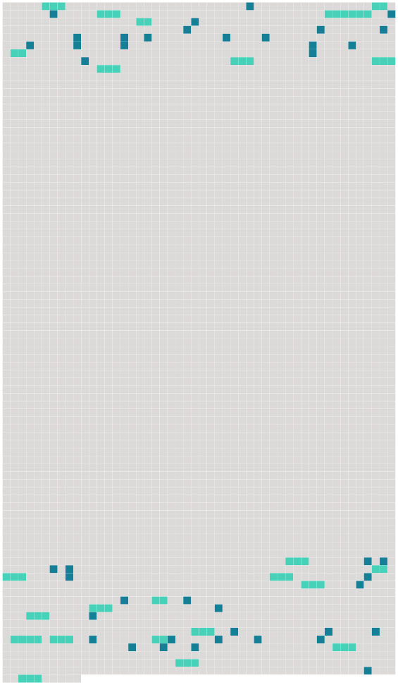

Longueur nb maillons : 66 mentions |
|
— « Comment se porte [M. Duflot] ce matin?? [1 phrases] — « Pas trop mal, monsieur le gouverneur », répondit le domestique, « [monsieur] a bien hâte de connaître notre curé.
» [Il] pouvait avoir cinquante ans. [M. Duflot] n'était pas un naufragé du « Queen of the Waves ». Un jour que Roger et Paul étaient allés à terre, ils virent [un homme assis sur un rocher] , et [qui] examinait le « Nautilus » avec attention. Au moment où les voyageurs allaient se rembarquer, [cet homme] vint à eux et leur [dit] : « Est -il vrai qu'il existe une ville sous-marine où l'on peut vivre en paix, loin de toutes les conventions du monde, loin de toutes les niaiseries et de toutes les faussetés qui fleurissent sur la terre??
»
»
»
» [1 phrases] Je m'appelle Lamontagne, ne trouvez [-vous] pas que c'est un peu gênant, pour habiter dans un sous-marin??
» [1 phrases]
»
Le curé passa quelque temps chez [M. Duflot] et partit en promettant de revenir bientôt. [129 phrases] À ce moment, la porte de la chapelle se rouvrit, et l'on vit apparaître [M. Duflot] , dans une chaise à roulette, [que] poussait [son] fidèle domestique.
Roger alla au-devant de [lui] et [l'] installa auprès de son siège. Une voix douce et vibrante modulait alors les premiers mots de ce chant toujours si beau « Minuit, chrétiens. » En entendant cette voix -là, le gouverneur tressaillit et [son voisin] , [M. Duflot] , posa la main sur [son] cœur, comme pour en arrêter les battements. [1 phrases] Quand le chant pieux fut terminé, [M. Duflot] se pencha à l'oreille de Roger et lui [demanda] : « Qui donc chante ainsi?? [1 phrases]
Les deux hommes ne parlèrent plus tout le temps que dura la messe, mais en sortant de la chapelle, [M. Duflot] reprit la conversation où [il] l'avait laissée : [2 phrases] [Vous] le constaterez, [monsieur Duflot] , quand [vous] la connaîtrez. [1 phrases]
»
» [1 phrases]
» [4 phrases] [M. Duflot] , contre [son] habitude, avait accepté de dîner en compagnie, ce qu' [il] ne faisait généralement pas. [Ce] n'était pas [un convive bien gai] que [M. Duflot] , mais [il] avait le bon esprit de garder pour [lui -même] [son] incurable tristesse, et comme [il] avait beaucoup voyagé, [il] était fort intéressant à entendre causer.
[Il] n'était pas de ceux qui semblent avoir tout vu à travers un verre grossissant, et qui tiennent leurs auditeurs pour des nigauds : [il] parlait quand on [l'] interrogeait, et [savait] se taire au bon moment. Monsieur le curé, demanda, tout à coup : « [M. Duflot] , cette jeune fille, qui a si bien chanté « Minuit Chrétiens », a-t -elle ses parents à Némoville?? [6 phrases] » questionna [M. Duflot] avec intérêt. [4 phrases]
» |
 |
Il est possible de télécharger la ressource sur la page Ortolang |
Si vous avez des questions ou vous voyez des erreurs, merci d'envoyer un mail à silvia.federzoni89@gmail.com |